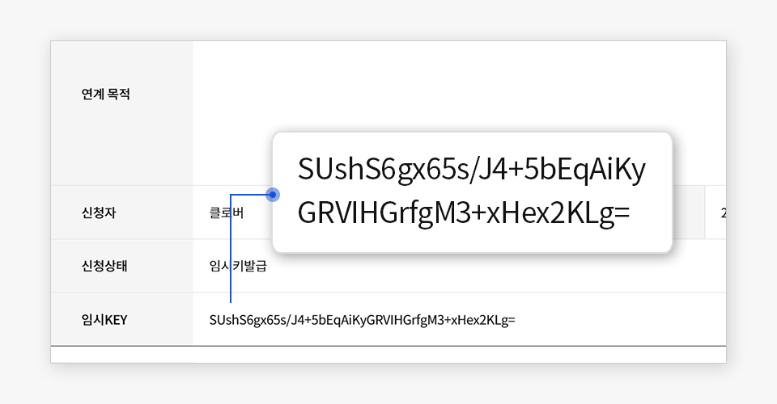
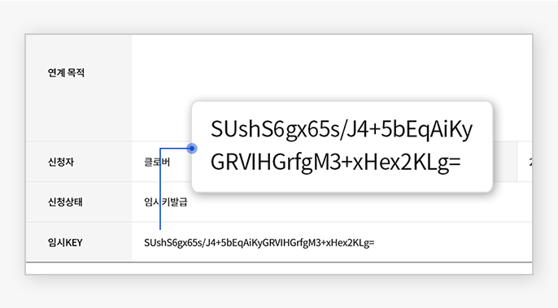

이용 안내 및 절차
디지털서비스 개방사업 수행절차
디지털서비스 개방사업은 수요기관(민간채널), 운영기관(개방플랫폼), 개방기관(공공서비스)간에 아래와 같은 절차에 따라 진행됩니다.


API 이용 신청을 하시려면?
앞선 과정을 통해 오프라인 협약, 온라인 회원등록 과정을 모두 거치신 후 온라인 상에서 API 이용 신청을 하실 때 필요한 과정입니다. 이 과정은 디지털서비스 개방 ‘관리 메뉴’에 로그인을 하신 상태에서 이용하실 수 있습니다.
- 1. 디지털서비스개방 업무메뉴의 '서비스 관리 - API 이용신청 관리'탭에서 API 서비스 이용을 신청 할 수 있습니다.
- (API 이용 신청은 관리 메뉴에 로그인한 상태에서 할 수 있습니다.)
- 2. 'API 이용신청 등록'을 통해 간단한 정보를 작성한 후 등록 버튼을 눌러 원하는 서비스를 신청합니다.
- 3. 신청 내역이 운영기관 담당자의 승인을 받으면 API 이용 신청이 완료되고, 임시 KEY가 발급됩니다.
- (발급된 임시 KEY는 관리 메뉴의 '서비스 관리 - API 이용신청 관리'에서 확인하실 수 있으며, 신청자의 이메일로도 전송됩니다.)
임시 KEY를 확인하시려면?
API 이용신청이 승인되면 개방기관 서비스 별로 임시 KEY가 발급됩니다. 관리자 포털의 '서비스 관리 - API 이용신청 관리' 메뉴의 상세 페이지에서 확인이 가능하며, 신청자의 이메일에서도 확인 가능합니다.
 